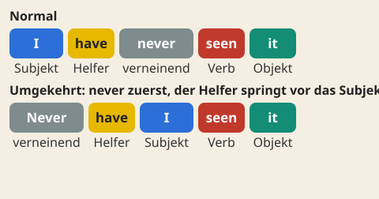

Umkehr nach never, hardly und not only
Mit einem KI-Tutor lernen
Ein KI-Tutor erklärt dir diese Seite und hilft dir bei den Aufgaben. Wähl deinen Assistenten:
Mit Claude öffnen Mit ChatGPT öffnen Mit Mistral Vibe öffnen
Du nutzt dein eigenes Konto beim Anbieter. Der Assistent ist kein Angebot von lernapps.net: lernapps liefert nur Inhalte und Aufgaben. Die Wahl gilt für alle Seiten, nur auf diesem Gerät.
Der Helfer springt nach vorn
In einem Sachtext steht der Satz „Seldom do we see such a crowd.“ Er klingt wie eine Frage, ist aber keine.
Aufgabe
Lösung
Das Wort do steht jetzt vor dem Subjekt we. richtige Antwort
Der Helfer do ist neu und steht direkt hinter dem Wort seldom. Das Subjekt we steht dahinter.
Das Verb see ist verschwunden.
See steht in beiden Sätzen. Es folgt nach dem Subjekt we.
Aus dem Satz ist eine Frage geworden.
Am Ende steht ein Punkt, und die Umkehr betont das Wort never.
Nach einem verneinenden Wort am Satzanfang tauschen Helfer und Subjekt die Plätze.
Das kannst du danach: Du erkennst und bildest Sätze, in denen nach never, hardly, seldom oder not only der Helfer vor dem Subjekt steht.
Lesestück: Landung auf dem Mond
Lies den Text und markiere in Gedanken die Sätze, die mit einem verneinenden Wort beginnen und bei denen der Helfer vor dem Subjekt steht.
A. Der Start
On 16 July 1969 a rocket lifted off from Kennedy Space Center in Florida. On board were three astronauts: Neil Armstrong, Buzz Aldrin and Michael Collins. Their goal was the Moon. Never before had humans walked on another world. Four days later, on 20 July, the lunar module Eagle touched down on the Moon. Armstrong and Aldrin were inside. Collins stayed in orbit in the command module.
| Englisch | Deutsch |
|---|---|
| on board | an Bord |
| lift off | abheben, starten |
| astronaut | Raumfahrer, Raumfahrerin |
| lunar module | Mondlandefähre |
| command module | Kommandokapsel |
| orbit | Umlaufbahn |
| touch down | aufsetzen, landen |
B. Die Landung
The landing was tense. Eagle came down with 216 pounds (98 kg) of usable fuel left. During the descent the instruments showed fuel for only 25 more seconds of powered flight before an abort would have become unsafe. Later analysis suggested that the real figure was probably closer to 50 seconds. Seldom did later crews land with so little fuel. Armstrong and Aldrin had a job to do. Not only did they walk on the surface, but they also collected 21.5 kg of lunar material.
| Englisch | Deutsch |
|---|---|
| tense | angespannt |
| fuel | Treibstoff |
| descent | Abstieg |
| usable | nutzbar |
| powered flight | Flug mit Antrieb |
| unsafe | nicht sicher |
| abort | Abbruch (der Landung) |
| suggest | nahelegen |
| figure | Zahl, Wert |
| collect | sammeln |
| surface | Oberfläche |
| analysis | Auswertung |
| lunar material | Mondgestein |
C. Die Welt schaut zu
Armstrong stepped onto the surface on 21 July, about six and a half hours after the landing. All in all, the two men spent more than 21 hours on the Moon, and the moonwalk lasted 2 hours, 31 minutes and 40 seconds. An estimated 600 million people watched the moonwalk on television, about one fifth of the world's population. On 24 July the crew splashed down in the Pacific Ocean. For the first time, people on Earth watched humans walk on the Moon.
| Englisch | Deutsch |
|---|---|
| step onto | betreten |
| moonwalk | Mondspaziergang |
| crew | Besatzung |
| last | dauern |
| all in all | insgesamt |
| estimated | geschätzt |
| population | Bevölkerung |
| splash down | im Meer wassern |
| viewer | Zuschauer, Zuschauerin |
| Angabe | Wert |
|---|---|
| Start | 16. Juli 1969 |
| Landung auf dem Mond | 20. Juli 1969 |
| Dauer des Mondspaziergangs | 2 Stunden 31 Minuten 40 Sekunden |
| Zuschauer am Fernseher | geschätzt 600 Millionen |
Quelle: Wikipedia (englisch) „Apollo 11“, geöffnet am 24. November 2026. Der Text ist selbst geschrieben und folgt nur den Fakten der Quelle. Die Zahlen zu den Zuschauern sind Schätzungen der Quelle. Die Regel stützt sich auf Wikipedia (englisch) „Negative inversion“.
Verneinendes Wort vorn, Helfer vor dem Subjekt
Im Lesestück stehen Sätze wie „Never before had humans walked on another world.“ Ein Wort mit verneinender Bedeutung (never, seldom, hardly, not only) steht am Satzanfang. Diese Umkehr heißt Inversion. Auf der Satzleiste liegt die gelbe Helferkarte jetzt vor der Karte Subjekt: Der Helfer springt vor das Subjekt, genau wie in einer Frage. Das Verb steht danach wie im normalen Satz, nur ohne Endung, wenn do, does oder did dabei ist. Das gilt nur, wenn das verneinende Wort vorn steht und für den ganzen Satz gilt. Als Helfer zählen hier auch have, has und had: Never have I seen it.

© CC-BY-4.0Der verneinende Ausdruck zieht den Helfer nach vorn: Der Helfer springt vor das Subjekt.
| Englisch | Deutsch |
|---|---|
| never | nie |
| seldom | selten |
| hardly … when | kaum … als |
| not only … but also | nicht nur … sondern auch |
| Normal | Umgekehrt |
|---|---|
| He has seldom lost. | Seldom has he lost. |
| We had hardly left when it rained. | Hardly had we left when it rained. |
| She not only sang, but she also danced. | Not only did she sing, but she also danced. |
Merke
Verneinendes Wort vorn, dann Helfer, dann Subjekt. Gibt es im Satz noch keinen Helfer (wie in sang), kommt do, does oder did dazu, und das Verb steht ohne Endung. Nur der erste Satzteil wird umgekehrt (…, but she also danced). Gibt es mehrere Helfer, springt nur der erste (Never would I have thought so). Die Umkehr klingt gehoben und kommt in Reden und Texten vor.
Übung
Aufgabe
Lösung
In der Mondlandefähre Eagle.
Im Landemodul waren Armstrong und Aldrin.
In der Kommandokapsel in der Mondumlaufbahn. richtige Antwort
Der Text sagt, dass Collins im Orbit blieb.
Auf der Erde im Kontrollzentrum.
Collins flog als dritter Astronaut mit.
Collins blieb in der Kommandokapsel im Orbit, während die beiden anderen landeten.
Aufgabe
Lösung
Richtige Antwort: Die Aussage stimmt nicht.
Der Text sagt: Seldom did later crews land with so little fuel. Spätere Besatzungen hatten also meist mehr Treibstoff.
Aufgabe
Lösung
Collins stayed in orbit in the command module.
Das beschreibt, wo Collins war, nicht, was die beiden auf der Oberfläche taten.
On 24 July the crew splashed down in the Pacific Ocean.
Das beschreibt die Rückkehr zur Erde.
Not only did they walk on the surface, but they also collected 21.5 kg of lunar material. richtige Antwort
Der Satz nennt zwei Tätigkeiten: gehen und Mondgestein sammeln.
Der Beleg ist der Satz mit not only, der beide Tätigkeiten nennt.
Aufgabe
Wähle den richtigen Helfer für die umgekehrte Wortstellung.
Tipp
Schau, ob im normalen Satz schon ein Helfer steht. Sonst kommt do, does oder did.
- Ich habe nie einen solchen Ausblick gesehen. → Never … I seen such a view.
- Sie hilft selten anderen. → Seldom … she help others.
- Er gewann nicht nur, sondern half auch anderen. → Not only … he win, but he also helped others.
Lösung
- Never have I seen such a view.
- Seldom does she help others.
- Not only did he win, but he also helped others.
Aufgabe
Schreibe den Satz mit Umkehr nach dem verneinenden Wort.
Tipp
Das verneinende Wort kommt nach vorn. Dann Helfer, Subjekt, Verb.
- He has never lost a game.
- She seldom makes a mistake.
- They not only won the cup, but they also broke the record.
Lösung
- Never has he lost a game. (auch richtig: Never has he lost a match.; Never has he lost any game.; Never has he lost any match.)
- Seldom does she ever make a mistake. (auch richtig: Seldom does she ever make mistakes.; Seldom does she make a mistake.; Seldom does she make mistakes.)
- Not only did they win the cup, but they also broke the record. (auch richtig: Not only did they win the cup, but they also broke a record.; Not only did they win the cup, but also broke the record.; Not only did they win the cup, but also broke a record.)
Aufgabe
In jedem Satz steckt ein Fehler. Schreibe den Satz richtig.
Tipp
Prüfe, ob der Helfer vor dem Subjekt steht und ob das Verb in der richtigen Form folgt.
- Hardly I had sat down when the phone rang.
- Not only he laughed, but he also cried.
Lösung
- Hardly had I sat down when the phone rang.
- Not only did he laugh, but he also cried.
Aufgabe
Hör zu und schreibe, was du hörst.
- KI
- KI
- KI
Lösung
- Never have I felt so tired.
- Seldom does he speak in public.
- Hardly had the lesson begun when the bell rang.
Sprechen und schreiben
Aufgabe
Hör zu, sprich nach und nimm dich auf. Vergleiche dann mit dem Original.
Tipp
Hör den Satz zuerst. Sprich dann nach und betone das verneinende Wort am Anfang.
- Never before had I seen the sea.KI
- Seldom do we hear such a story.KI
- Not only did he come, but he stayed.KI
Zum Aufnehmen braucht diese Aufgabe JavaScript. Die Beispiele kannst du auch ohne anhören.
Lösung
- Never before had I seen the sea.
- Seldom do we hear such a story.
- Not only did he come, but he stayed.
Offene Aufgabe
Du schreibst für eine Schülerzeitung einen kurzen Text über die Mondlandung. Schreibe zwei Sätze mit Umkehr nach einem verneinenden Wort (never, seldom, hardly oder not only). Die Tatsachen findest du im Lesestück. Verwende eigene Worte.
Eine gute Antwort enthält:
Lösung
Seldom did later crews land with so little fuel. Not only did the crew walk on the Moon, but they also brought back lunar material.
Wie es weitergeht
Damit kennst du den Helfer an seinen Plätzen: in der Frage, in der Verneinung, am Satzende im question tag, vor dem Verb zur Betonung und vor dem Subjekt nach einem verneinenden Wort. Wenn du englische Reden und Bücher liest, begegnet er dir wieder.
Fehler gefunden oder eine Idee für diese App?